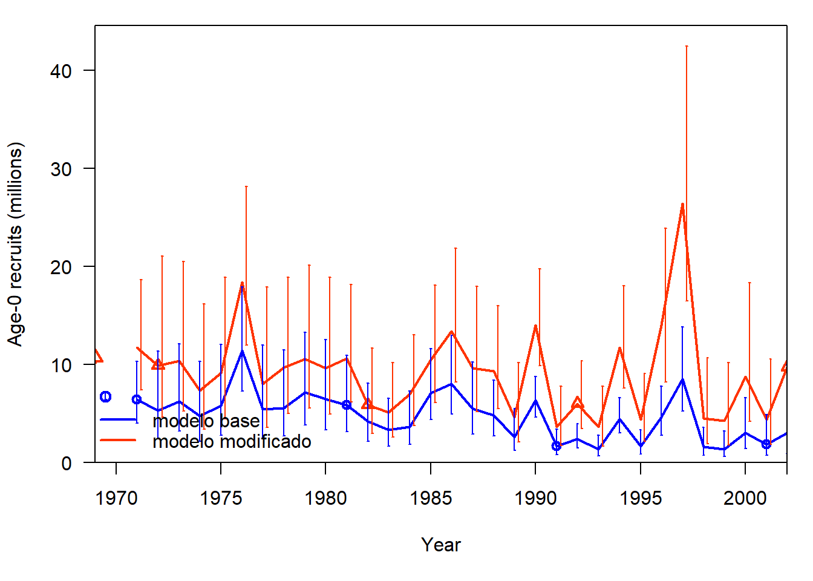
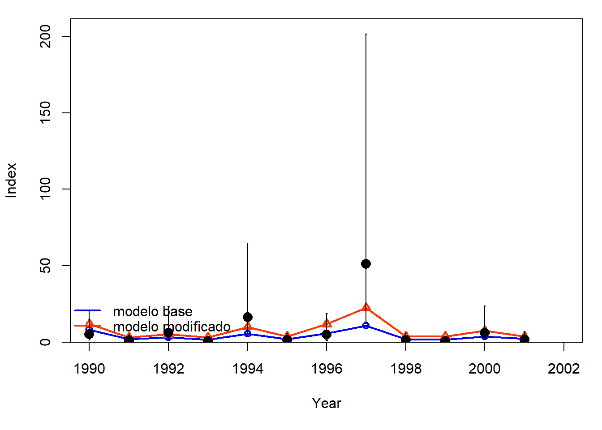

#install.packages('r4ss')
#install.packages('here')library(here)
library(r4ss)# Directorios de trabajo
Identificamos el directorio donde se encuentra el modelo base
dirname.base <- here("modelos_SS3","simple")Creamos un nuevo directorio donde se encuentra el modelo base (para este ejercicio)
dirname.simple_base <- here("Ejercicios","4.Crear_nuevos_modelos","simple_base")
dir.create(path=dirname.simple_base, showWarnings = TRUE, recursive = TRUE)Creamos un nuevo directorio para la nueva versión del modelo modificado
dirname.simple_mod <- here("Ejercicios","4.Crear_nuevos_modelos","simple_modificado")
dir.create(path=dirname.simple_mod, showWarnings = TRUE, recursive = TRUE)Copiamos los archivos de entrada del modelo con la función
copy_SS_inputs()
#?copy_SS_inputsCopiamos los archivos del modelo base
copy_SS_inputs(dir.old = dirname.base,
dir.new = dirname.simple_base,
copy_exe = TRUE,
verbose = FALSE)## [1] TRUECopiamos los archivos para el modelo que vamos a modificar
copy_SS_inputs(dir.old = dirname.base,
dir.new = dirname.simple_mod,
copy_exe = TRUE,
verbose = FALSE)## [1] TRUESS_read()#?SS_readinputs <- r4ss::SS_read(dir = dirname.simple_mod)También se pueden correr las funciones de SS_read() por
separado: SS_readstarter(),
SS_readdat(),SS_readctl(),
SS_readforecast(), and SS_readwtatage().
start <- r4ss::SS_readstarter(file = file.path(dirname.simple_mod, "starter.ss"),
verbose = FALSE)
dat <- r4ss::SS_readdat(file = file.path(dirname.simple_mod, start$datfile),
verbose = FALSE)
ctl <- r4ss::SS_readctl(file = file.path(dirname.simple_mod, start$ctlfil),
verbose = FALSE,
use_datlist = TRUE,
datlist = dat)
fore <- r4ss::SS_readforecast(file = file.path(dirname.simple_mod, "forecast.ss"),
verbose = FALSE)Cada uno de los archivos de entrada se lee en R como una lista.
Use names() para ver todos los componentes de la
lista
Revisamos los elementos de la lista
names(inputs) ## [1] "dir" "path" "dat" "ctl" "start" "fore" "wtatage"Revisamos los nombres de los componentes de la lista del archivo inicio
names(inputs$start) ## [1] "sourcefile" "type" "SSversion"
## [4] "datfile" "ctlfile" "init_values_src"
## [7] "run_display_detail" "detailed_age_structure" "checkup"
## [10] "parmtrace" "cumreport" "prior_like"
## [13] "soft_bounds" "N_bootstraps" "last_estimation_phase"
## [16] "MCMCburn" "MCMCthin" "jitter_fraction"
## [19] "minyr_sdreport" "maxyr_sdreport" "N_STD_yrs"
## [22] "converge_criterion" "retro_yr" "min_age_summary_bio"
## [25] "depl_basis" "depl_denom_frac" "SPR_basis"
## [28] "F_report_units" "F_age_range" "F_report_basis"
## [31] "MCMC_output_detail" "ALK_tolerance" "final"
## [34] "seed"También se puede hacer referencia a un elemento específico para ver los componentes. Ejemplo, mirar la sección de parámetros de mortalidad y crecimiento (MG_parms)
inputs$ctl$MG_parms## LO HI INIT PRIOR PR_SD
## NatM_p_1_Fem_GP_1 5e-02 0.150000 0.10000000 0.10000000 0.8
## L_at_Amin_Fem_GP_1 -1e+01 45.000000 21.65350000 36.00000000 10.0
## L_at_Amax_Fem_GP_1 4e+01 90.000000 71.64930000 70.00000000 10.0
## VonBert_K_Fem_GP_1 5e-02 0.250000 0.14729700 0.15000000 0.8
## CV_young_Fem_GP_1 5e-02 0.250000 0.10000000 0.10000000 0.8
## CV_old_Fem_GP_1 5e-02 0.250000 0.10000000 0.10000000 0.8
## Wtlen_1_Fem_GP_1 -3e+00 3.000000 0.00000244 0.00000244 0.8
## Wtlen_2_Fem_GP_1 -3e+00 4.000000 3.34694000 3.34694000 0.8
## Mat50%_Fem_GP_1 5e+01 60.000000 55.00000000 55.00000000 0.8
## Mat_slope_Fem_GP_1 -3e+00 3.000000 -0.25000000 -0.25000000 0.8
## Eggs/kg_inter_Fem_GP_1 -3e+00 3.000000 1.00000000 1.00000000 0.8
## Eggs/kg_slope_wt_Fem_GP_1 -3e+00 3.000000 0.00000000 0.00000000 0.8
## NatM_p_1_Mal_GP_1 5e-02 0.150000 0.10000000 0.10000000 0.8
## L_at_Amin_Mal_GP_1 0e+00 45.000000 0.00000000 36.00000000 10.0
## L_at_Amax_Mal_GP_1 4e+01 90.000000 69.53620000 70.00000000 10.0
## VonBert_K_Mal_GP_1 5e-02 0.250000 0.16353300 0.15000000 0.8
## CV_young_Mal_GP_1 5e-02 0.250000 0.10000000 0.10000000 0.8
## CV_old_Mal_GP_1 5e-02 0.250000 0.10000000 0.10000000 0.8
## Wtlen_1_Mal_GP_1 -3e+00 3.000000 0.00000244 0.00000244 0.8
## Wtlen_2_Mal_GP_1 -3e+00 4.000000 3.34694000 3.34694000 0.8
## RecrDist_GP_1 0e+00 0.000000 0.00000000 0.00000000 0.0
## RecrDist_Area_1 0e+00 0.000000 0.00000000 0.00000000 0.0
## RecrDist_month_1 0e+00 0.000000 0.00000000 0.00000000 0.0
## CohortGrowDev 1e-01 10.000000 1.00000000 1.00000000 1.0
## FracFemale_GP_1 1e-06 0.999999 0.50000000 0.50000000 0.5
## PR_type PHASE env_var&link dev_link dev_minyr
## NatM_p_1_Fem_GP_1 0 -3 0 0 0
## L_at_Amin_Fem_GP_1 6 2 0 0 0
## L_at_Amax_Fem_GP_1 6 4 0 0 0
## VonBert_K_Fem_GP_1 6 4 0 0 0
## CV_young_Fem_GP_1 0 -3 0 0 0
## CV_old_Fem_GP_1 0 -3 0 0 0
## Wtlen_1_Fem_GP_1 0 -3 0 0 0
## Wtlen_2_Fem_GP_1 0 -3 0 0 0
## Mat50%_Fem_GP_1 0 -3 0 0 0
## Mat_slope_Fem_GP_1 0 -3 0 0 0
## Eggs/kg_inter_Fem_GP_1 0 -3 0 0 0
## Eggs/kg_slope_wt_Fem_GP_1 0 -3 0 0 0
## NatM_p_1_Mal_GP_1 0 -3 0 0 0
## L_at_Amin_Mal_GP_1 0 -3 0 0 0
## L_at_Amax_Mal_GP_1 6 4 0 0 0
## VonBert_K_Mal_GP_1 6 4 0 0 0
## CV_young_Mal_GP_1 0 -3 0 0 0
## CV_old_Mal_GP_1 0 -3 0 0 0
## Wtlen_1_Mal_GP_1 0 -3 0 0 0
## Wtlen_2_Mal_GP_1 0 -3 0 0 0
## RecrDist_GP_1 0 -4 0 0 0
## RecrDist_Area_1 0 -4 0 0 0
## RecrDist_month_1 0 -4 0 0 0
## CohortGrowDev 0 -1 0 0 0
## FracFemale_GP_1 0 -99 0 0 0
## dev_maxyr dev_PH Block Block_Fxn PType
## NatM_p_1_Fem_GP_1 0 0 0 0 1
## L_at_Amin_Fem_GP_1 0 0 0 0 2
## L_at_Amax_Fem_GP_1 0 0 0 0 2
## VonBert_K_Fem_GP_1 0 0 0 0 2
## CV_young_Fem_GP_1 0 0 0 0 2
## CV_old_Fem_GP_1 0 0 0 0 2
## Wtlen_1_Fem_GP_1 0 0 0 0 3
## Wtlen_2_Fem_GP_1 0 0 0 0 3
## Mat50%_Fem_GP_1 0 0 0 0 4
## Mat_slope_Fem_GP_1 0 0 0 0 4
## Eggs/kg_inter_Fem_GP_1 0 0 0 0 5
## Eggs/kg_slope_wt_Fem_GP_1 0 0 0 0 5
## NatM_p_1_Mal_GP_1 0 0 0 0 1
## L_at_Amin_Mal_GP_1 0 0 0 0 2
## L_at_Amax_Mal_GP_1 0 0 0 0 2
## VonBert_K_Mal_GP_1 0 0 0 0 2
## CV_young_Mal_GP_1 0 0 0 0 2
## CV_old_Mal_GP_1 0 0 0 0 2
## Wtlen_1_Mal_GP_1 0 0 0 0 3
## Wtlen_2_Mal_GP_1 0 0 0 0 3
## RecrDist_GP_1 0 0 0 0 7
## RecrDist_Area_1 0 0 0 0 8
## RecrDist_month_1 0 0 0 0 9
## CohortGrowDev 0 0 0 0 11
## FracFemale_GP_1 0 0 0 0 14Se pueden hacer cambios estructurales básicos o grandes en el modelo SS3 en R. Por ejemplo, cambiar el valor inicial de M.
Primero revisamos el valor inicial
inputs$ctl$MG_parms["NatM_p_1_Fem_GP_1", "INIT"]## [1] 0.1Luego cambiamos el valor inicial a 0.2
inputs$ctl$MG_parms["NatM_p_1_Fem_GP_1", "INIT"] <- 0.2También se pueden modificar las configuraciones en otros archivos. Por ejemplo, la biomada objetivo se puede modificar en el archivo forecast.
inputs$fore$Btarget## [1] 0.342inputs$fore$Btarget <- 0.45
inputs$fore$Btarget## [1] 0.45La función SS_write() se puede utilizar para escribir
los objetos modificados en R en archivos de entrada a SS3.
#?SS_write
r4ss::SS_write(inputs, dir = dirname.simple_mod, overwrite = TRUE)# También se pueden correr las funciones de SS_write() por separado:
r4ss::SS_writestarter(start,
dir = dirname.simple_mod,
overwrite = TRUE,
verbose = FALSE)
r4ss::SS_writedat(dat,
outfile = file.path(dirname.simple_mod, start$datfile),
overwrite = TRUE,
verbose = FALSE)
r4ss::SS_writectl(ctl,
outfile = file.path(dirname.simple_mod, start$ctlfile),
overwrite = TRUE,
verbose = FALSE)
r4ss::SS_writeforecast(fore,
dir = dirname.simple_mod,
file = "forecast.ss",
overwrite = TRUE,
verbose = FALSE)run_SS_models()#?run_SS_modelsEjecutamos el modelo base
r4ss::run_SS_models(dirvec = dirname.simple_base,
model = "ss_win.exe" ,
skipfinished = FALSE)## dir
## 1 C:/Users/maria/Nextcloud/WorkshopSS3/Ejercicios/4.Crear_nuevos_modelos/simple_base
## results
## 1 ran modelEjecutamos el modelo modificado
r4ss::run_SS_models(dirvec = dirname.simple_mod,
model = "ss_win.exe" ,
skipfinished = FALSE)## dir
## 1 C:/Users/maria/Nextcloud/WorkshopSS3/Ejercicios/4.Crear_nuevos_modelos/simple_modificado
## results
## 1 ran modelSS_output()#?SS_outputLeemos las salidas del modelo base
replist_base <- r4ss::SS_output(
dir = dirname.simple_base,
verbose = TRUE,
printstats = TRUE
)## TempFile Size
## "size of file gradfil1.tmp = 0" "size of file gradfil2.tmp = 0"
## <NA> <NA>
## "size of file varssave.tmp = 0" "size of file cmpdiff.tmp = 0"
## $SS_version
## [1] "3.30.19.00;_safe;_compile_date:_Apr 4 2022;_Stock_Synthesis_by_Richard_Methot_(NOAA)_using_ADMB_12.3"
##
## $SS_versionshort
## [1] "3.30"
##
## $SS_versionNumeric
## [1] 3.3
##
## $StartTime
## [1] "StartTime: Tue Jan 24 23:44:25 2023"
##
## $RunTime
## [1] "0 hours, 1 minutes, 1 seconds."
##
## $Files_used
## [1] "Data_File: data.ss Control_File: control.ss"
##
## $Nwarnings
## [1] 2
##
## $warnings
## [1] "1 NOTE: Max data length bin: 90 < max pop len bins: 94; so will accumulate larger pop len bins"
## [2] "2 NOTE: This model has just one settlement event. Changing to recr_dist_method 4 and removing the recruitment distribution parameters at the end of the MG parms section (below growth parameters) will produce identical results and simplify the model."
## [3] "N warnings: 2"
##
## $likelihoods_used
## values lambdas
## TOTAL 1.30652e+03 NA
## Catch 3.58566e-11 NA
## Equil_catch 0.00000e+00 NA
## Survey -3.98360e+00 NA
## Length_comp 6.51008e+02 NA
## Age_comp 5.86610e+02 NA
## Size_at_age 7.92250e+01 NA
## Recruitment -7.39702e+00 1
## InitEQ_Regime 1.54502e-30 1
## Forecast_Recruitment 0.00000e+00 1
## Parm_priors 1.05602e+00 1
## Parm_softbounds 1.20460e-03 NA
## Parm_devs 0.00000e+00 1
## Crash_Pen 0.00000e+00 1
##
## $likelihoods_laplace
## values lambdas
## NoBias_corr_Recruitment(info_only) -7.39702 1
## Laplace_obj_fun(info_only) 1306.52000 NA
##
## $likelihoods_by_fleet
## Label ALL FISHERY SURVEY1 SURVEY2
## 175 Catch_lambda NA 1.00000e+00 1.00000 1.00000
## 176 Catch_like 3.58566e-11 3.58566e-11 0.00000 0.00000
## 177 Init_equ_lambda NA 1.00000e+00 1.00000 1.00000
## 178 Init_equ_like 0.00000e+00 0.00000e+00 0.00000 0.00000
## 179 Surv_lambda NA 0.00000e+00 1.00000 1.00000
## 180 Surv_like -3.98360e+00 0.00000e+00 -6.17325 2.18966
## 181 Surv_N_use NA 0.00000e+00 9.00000 12.00000
## 182 Surv_N_skip NA 0.00000e+00 0.00000 0.00000
## 183 Length_lambda NA 1.00000e+00 1.00000 0.00000
## 184 Length_like 6.51008e+02 5.12840e+02 138.16800 0.00000
## 185 Length_N_use NA 3.10000e+01 9.00000 0.00000
## 186 Length_N_skip NA 0.00000e+00 0.00000 0.00000
## 187 Age_lambda NA 1.00000e+00 1.00000 0.00000
## 188 Age_like 5.86610e+02 4.56078e+02 130.53200 0.00000
## 189 Age_N_use NA 3.10000e+01 9.00000 0.00000
## 190 Age_N_skip NA 0.00000e+00 0.00000 0.00000
## 191 Sizeatage_lambda NA 1.00000e+00 1.00000 0.00000
## 192 sizeatage_like 7.92250e+01 3.79917e+01 41.23330 0.00000
## 193 sizeatage_N_use NA 2.00000e+00 2.00000 0.00000
## 194 sizeatage_N_skip NA 0.00000e+00 0.00000 0.00000
##
## $N_estimated_parameters
## [1] 54
##
## $table_of_phases
##
## -99 -4 -3 -1 1 2 3 4 5
## 8 6 15 1 3 34 2 5 10
##
## $estimated_non_dev_parameters
## Value Phase Min Max Init Status
## L_at_Amin_Fem_GP_1 21.653500 2 -10.00 45.00 21.653500 OK
## L_at_Amax_Fem_GP_1 71.649300 4 40.00 90.00 71.649300 OK
## VonBert_K_Fem_GP_1 0.147297 4 0.05 0.25 0.147297 OK
## L_at_Amax_Mal_GP_1 69.536200 4 40.00 90.00 69.536200 OK
## VonBert_K_Mal_GP_1 0.163533 4 0.05 0.25 0.163533 OK
## SR_LN(R0) 8.815050 1 3.00 31.00 8.815050 OK
## SR_BH_steep 0.614248 4 0.20 1.00 0.614248 OK
## LnQ_base_SURVEY1(2) 0.516018 1 -7.00 5.00 0.516018 OK
## LnQ_base_SURVEY2(3) -6.628100 1 -7.00 5.00 -6.628100 OK
## Size_inflection_FISHERY(1) 53.641100 2 19.00 80.00 53.641100 OK
## Size_95%width_FISHERY(1) 18.923200 3 0.01 60.00 18.923200 OK
## Size_inflection_SURVEY1(2) 36.653000 2 19.00 70.00 36.653000 OK
## Size_95%width_SURVEY1(2) 6.591790 3 0.01 60.00 6.591790 OK
## Parm_StDev Gradient Pr_type Prior Pr_SD
## L_at_Amin_Fem_GP_1 0.47553800 -0.000000006155530 Normal 36.00 10.00
## L_at_Amax_Fem_GP_1 0.30971500 0.000000004333790 Normal 70.00 10.00
## VonBert_K_Fem_GP_1 0.00367698 0.000000001062830 Normal 0.15 0.80
## L_at_Amax_Mal_GP_1 0.29215500 0.000000003548870 Normal 70.00 10.00
## VonBert_K_Mal_GP_1 0.00408873 0.000000001320920 Normal 0.15 0.80
## SR_LN(R0) 0.02735980 0.000000182256000 No_prior NA NA
## SR_BH_steep 0.06666850 0.000000000603095 Sym_Beta 0.70 0.05
## LnQ_base_SURVEY1(2) 0.11928700 0.000000003048970 No_prior NA NA
## LnQ_base_SURVEY2(3) 0.27062100 0.000000002304880 No_prior NA NA
## Size_inflection_FISHERY(1) 0.73275900 0.000000003636940 Sym_Beta 50.00 0.01
## Size_95%width_FISHERY(1) 0.74960900 -0.000000000888661 Sym_Beta 15.00 0.01
## Size_inflection_SURVEY1(2) 0.47456300 -0.000000002706290 Sym_Beta 30.00 0.01
## Size_95%width_SURVEY1(2) 0.72946100 0.000000002729210 Sym_Beta 10.00 0.01
## Pr_Like Afterbound
## L_at_Amin_Fem_GP_1 1.02911000000 OK
## L_at_Amax_Fem_GP_1 0.01360150000 OK
## VonBert_K_Fem_GP_1 0.00000570604 OK
## L_at_Amax_Mal_GP_1 0.00107534000 OK
## VonBert_K_Mal_GP_1 0.00014308200 OK
## SR_LN(R0) NA OK
## SR_BH_steep 0.00003845290 OK
## LnQ_base_SURVEY1(2) NA OK
## LnQ_base_SURVEY2(3) NA OK
## Size_inflection_FISHERY(1) 0.00018599500 OK
## Size_95%width_FISHERY(1) 0.00146751000 OK
## Size_inflection_SURVEY1(2) 0.00099473600 OK
## Size_95%width_SURVEY1(2) 0.00939774000 OK
##
## $log_det_hessian
## [1] 160.707
##
## $maximum_gradient_component
## [1] 1.82256e-07
##
## $parameters_with_highest_gradients
## Value Gradient
## SR_LN(R0) 8.815050 1.82256e-07
## Main_RecrDev_2000 0.171606 -1.48530e-08
## Main_RecrDev_1999 -0.656469 1.42714e-08
## Main_RecrDev_1995 -0.605267 -1.16054e-08
## Main_RecrDev_1992 -0.273424 -7.97458e-09
##
## $Length_Comp_Fit_Summary
## Factor Fleet Recommend_var_adj # N Npos min_Nsamp max_Nsamp mean_Nsamp_in
## 1404 4 1 1.04775 # 31 31 125 125 125
## 1405 4 2 1.17464 # 9 9 125 125 125
## mean_Nsamp_adj mean_Nsamp_DM DM_theta mean_effN HarMean_effN Curr_Var_Adj
## 1404 125 NA NA 135.688 130.968 1
## 1405 125 NA NA 152.822 146.830 1
## Fleet_name
## 1404 FISHERY
## 1405 SURVEY1
##
## $Age_Comp_Fit_Summary
## Factor Fleet Recommend_var_adj # Nsamp_adj Npos min_Nsamp max_Nsamp
## 1452 5 1 1.01608 # 31 31 75 75
## 1453 5 2 1.07146 # 9 9 75 75
## mean_Nsamp_in mean_Nsamp_adj mean_Nsamp_DM DM_theta mean_effN HarMean_effN
## 1452 75 75 NA NA 82.1190 76.2062
## 1453 75 75 NA NA 89.4682 80.3594
## Curr_Var_Adj Fleet_name
## 1452 1 FISHERY
## 1453 1 SURVEY1
##
## $SBzero
## [1] 49909.7
##
## $current_depletion
## [1] 0.1129147
##
## $last_years_SPR
## [1] 0.563176
##
## $SPRratioLabel
## [1] "1-SPR"
##
## $sigma_R_in
## [1] 0.6
##
## $sigma_R_info
## period N_devs SD_of_devs Var_of_devs mean_SE mean_SEsquared
## 1 Main 31 0.450029 0.2025261 0.3228373 0.1096451
## 2 Early+Main 31 0.450029 0.2025261 0.3228373 0.1096451
## 3 Early+Main+Late 31 0.450029 0.2025261 0.3228373 0.1096451
## sqrt_sum_of_components SD_of_devs_over_sigma_R sqrt_sum_over_sigma_R
## 1 0.5587228 0.7500483 0.9312047
## 2 0.5587228 0.7500483 0.9312047
## 3 0.5587228 0.7500483 0.9312047
## alternative_sigma_R
## 1 0.5587228
## 2 0.5587228
## 3 0.5587228
##
## $rmse_table
## ERA N RMSE RMSE_over_sigmaR mean_BiasAdj
## 1 main 31 0.442711 0.544424 1
## 2 early 0 0.000000 0.000000 0
##
## $cormessage1
## [1] Range of abs(parameter correlations) is 3.93612e-05 to 0.775995
##
## $cormessage2
## [1] No correlations above threshold (cormax=0.95)
##
## $cormessage7
## [1] No uncorrelated parameters below threshold (cormin=0.01)Leemos las salidas del modelo modificado
replist_mod <- r4ss::SS_output(
dir = dirname.simple_mod,
verbose = TRUE,
printstats = TRUE
)## TempFile Size
## "size of file gradfil1.tmp = 0" "size of file gradfil2.tmp = 0"
## <NA> <NA>
## "size of file varssave.tmp = 0" "size of file cmpdiff.tmp = 0"
## $SS_version
## [1] "3.30.19.00;_safe;_compile_date:_Apr 4 2022;_Stock_Synthesis_by_Richard_Methot_(NOAA)_using_ADMB_12.3"
##
## $SS_versionshort
## [1] "3.30"
##
## $SS_versionNumeric
## [1] 3.3
##
## $StartTime
## [1] "StartTime: Tue Jan 24 23:45:27 2023"
##
## $RunTime
## [1] "0 hours, 1 minutes, 6 seconds."
##
## $Files_used
## [1] "Data_File: data.ss Control_File: control.ss"
##
## $Nwarnings
## [1] 5
##
## $warnings
## [1] "1 NOTE: Max data length bin: 90 < max pop len bins: 94; so will accumulate larger pop len bins"
## [2] "2 NOTE: This model has just one settlement event. Changing to recr_dist_method 4 and removing the recruitment distribution parameters at the end of the MG parms section (below growth parameters) will produce identical results and simplify the model."
## [3] "3 parameter init value is greater than parameter max 0.2 > 0.15 for parm: 1 ; search for <now check> echoinput for parm_type, will exit if prior requested"
## [4] "4 1st iteration warning: ssb(endyr)/ssb(styr)= 7.16309e-05; suggest start with larger R0 to get near 0.4; or use depletion fleet option"
## [5] "5 Final gradient: 0.000108176 is larger than final_conv: 0.0001"
## [6] " N parameters are on or within 1% of min-max bound: 1; check results, variance may be suspect"
## [7] "N warnings: 5"
##
## $likelihoods_used
## values lambdas
## TOTAL 2.55113e+03 NA
## Catch 2.18322e-10 NA
## Equil_catch 0.00000e+00 NA
## Survey 7.21522e+00 NA
## Length_comp 1.22139e+03 NA
## Age_comp 1.14617e+03 NA
## Size_at_age 1.81748e+02 NA
## Recruitment -6.46597e+00 1
## InitEQ_Regime 3.46667e-31 1
## Forecast_Recruitment 0.00000e+00 1
## Parm_priors 1.07297e+00 1
## Parm_softbounds 1.00288e-03 NA
## Parm_devs 0.00000e+00 1
## Crash_Pen 0.00000e+00 1
##
## $likelihoods_laplace
## values lambdas
## NoBias_corr_Recruitment(info_only) -6.46597 1
## Laplace_obj_fun(info_only) 2551.13000 NA
##
## $likelihoods_by_fleet
## Label ALL FISHERY SURVEY1 SURVEY2
## 181 Catch_lambda NA 1.00000e+00 1.00000 1.00000
## 182 Catch_like 2.18322e-10 2.18322e-10 0.00000 0.00000
## 183 Init_equ_lambda NA 1.00000e+00 1.00000 1.00000
## 184 Init_equ_like 0.00000e+00 0.00000e+00 0.00000 0.00000
## 185 Surv_lambda NA 0.00000e+00 1.00000 1.00000
## 186 Surv_like 7.21522e+00 0.00000e+00 1.30335 5.91187
## 187 Surv_N_use NA 0.00000e+00 9.00000 12.00000
## 188 Surv_N_skip NA 0.00000e+00 0.00000 0.00000
## 189 Length_lambda NA 1.00000e+00 1.00000 0.00000
## 190 Length_like 1.22139e+03 9.86879e+02 234.51500 0.00000
## 191 Length_N_use NA 3.10000e+01 9.00000 0.00000
## 192 Length_N_skip NA 0.00000e+00 0.00000 0.00000
## 193 Age_lambda NA 1.00000e+00 1.00000 0.00000
## 194 Age_like 1.14617e+03 9.17293e+02 228.87400 0.00000
## 195 Age_N_use NA 3.10000e+01 9.00000 0.00000
## 196 Age_N_skip NA 0.00000e+00 0.00000 0.00000
## 197 Sizeatage_lambda NA 1.00000e+00 1.00000 0.00000
## 198 sizeatage_like 1.81748e+02 9.06474e+01 91.10020 0.00000
## 199 sizeatage_N_use NA 2.00000e+00 2.00000 0.00000
## 200 sizeatage_N_skip NA 0.00000e+00 0.00000 0.00000
##
## $N_estimated_parameters
## [1] 54
##
## $table_of_phases
##
## -99 -4 -3 -1 1 2 3 4 5
## 8 6 15 1 3 34 2 5 10
##
## $estimated_non_dev_parameters
## Value Phase Min Max Init Status
## L_at_Amin_Fem_GP_1 21.975000 2 -10.00 45.00 21.653500 OK
## L_at_Amax_Fem_GP_1 73.301300 4 40.00 90.00 71.649300 OK
## VonBert_K_Fem_GP_1 0.152608 4 0.05 0.25 0.147297 OK
## L_at_Amax_Mal_GP_1 68.112500 4 40.00 90.00 69.536200 OK
## VonBert_K_Mal_GP_1 0.157866 4 0.05 0.25 0.163533 OK
## SR_LN(R0) 9.278960 1 3.00 31.00 8.815050 OK
## SR_BH_steep 0.745545 4 0.20 1.00 0.614248 OK
## LnQ_base_SURVEY1(2) 0.249630 1 -7.00 5.00 0.516018 OK
## LnQ_base_SURVEY2(3) -7.000000 1 -7.00 5.00 -6.628100 LO
## Size_inflection_FISHERY(1) 60.789400 2 19.00 80.00 53.641100 OK
## Size_95%width_FISHERY(1) 21.419100 3 0.01 60.00 18.923200 OK
## Size_inflection_SURVEY1(2) 38.658800 2 19.00 70.00 36.653000 OK
## Size_95%width_SURVEY1(2) 8.555220 3 0.01 60.00 6.591790 OK
## Parm_StDev Gradient Pr_type Prior Pr_SD
## L_at_Amin_Fem_GP_1 0.516701000 0.000002912960 Normal 36.00 10.00
## L_at_Amax_Fem_GP_1 0.379396000 -0.000007969080 Normal 70.00 10.00
## VonBert_K_Fem_GP_1 0.004249690 0.000003972350 Normal 0.15 0.80
## L_at_Amax_Mal_GP_1 0.351883000 -0.000030099400 Normal 70.00 10.00
## VonBert_K_Mal_GP_1 0.004561660 -0.000004872980 Normal 0.15 0.80
## SR_LN(R0) 0.029613800 -0.000107993000 No_prior NA NA
## SR_BH_steep 0.178634000 -0.000000126961 Sym_Beta 0.70 0.05
## LnQ_base_SURVEY1(2) 0.124010000 -0.000004019460 No_prior NA NA
## LnQ_base_SURVEY2(3) 0.000020156 -0.000000936778 No_prior NA NA
## Size_inflection_FISHERY(1) 1.195810000 -0.000005109790 Sym_Beta 50.00 0.01
## Size_95%width_FISHERY(1) 0.811022000 0.000008808560 Sym_Beta 15.00 0.01
## Size_inflection_SURVEY1(2) 0.640036000 -0.000004367980 Sym_Beta 30.00 0.01
## Size_95%width_SURVEY1(2) 0.975198000 -0.000000452821 Sym_Beta 10.00 0.01
## Pr_Like Afterbound
## L_at_Amin_Fem_GP_1 0.98350400000 OK
## L_at_Amax_Fem_GP_1 0.05449310000 OK
## VonBert_K_Fem_GP_1 0.00000531379 OK
## L_at_Amax_Mal_GP_1 0.01781320000 OK
## VonBert_K_Mal_GP_1 0.00004834360 OK
## SR_LN(R0) NA OK
## SR_BH_steep 0.00707218000 OK
## LnQ_base_SURVEY1(2) NA OK
## LnQ_base_SURVEY2(3) NA CHECK
## Size_inflection_FISHERY(1) 0.00147340000 OK
## Size_95%width_FISHERY(1) 0.00085479900 OK
## Size_inflection_SURVEY1(2) 0.00053889700 OK
## Size_95%width_SURVEY1(2) 0.00716167000 OK
##
## $log_det_hessian
## [1] 174.657
##
## $maximum_gradient_component
## [1] 0.000108176
##
## $parameters_with_highest_gradients
## Value Gradient
## SR_LN(R0) 9.278960 -1.07993e-04
## L_at_Amax_Mal_GP_1 68.112500 -3.00994e-05
## Size_95%width_FISHERY(1) 21.419100 8.80856e-06
## Main_RecrDev_1988 0.174828 -8.16318e-06
## L_at_Amax_Fem_GP_1 73.301300 -7.96908e-06
##
## $Length_Comp_Fit_Summary
## Factor Fleet Recommend_var_adj # N Npos min_Nsamp max_Nsamp mean_Nsamp_in
## 1410 4 1 0.423148 # 31 31 125 125 125
## 1411 4 2 0.681347 # 9 9 125 125 125
## mean_Nsamp_adj mean_Nsamp_DM DM_theta mean_effN HarMean_effN Curr_Var_Adj
## 1410 125 NA NA 60.4684 52.8934 1
## 1411 125 NA NA 90.0938 85.1684 1
## Fleet_name
## 1410 FISHERY
## 1411 SURVEY1
##
## $Age_Comp_Fit_Summary
## Factor Fleet Recommend_var_adj # Nsamp_adj Npos min_Nsamp max_Nsamp
## 1458 5 1 0.501556 # 31 31 75 75
## 1459 5 2 0.767694 # 9 9 75 75
## mean_Nsamp_in mean_Nsamp_adj mean_Nsamp_DM DM_theta mean_effN HarMean_effN
## 1458 75 75 NA NA 41.3971 37.6167
## 1459 75 75 NA NA 60.7131 57.5771
## Curr_Var_Adj Fleet_name
## 1458 1 FISHERY
## 1459 1 SURVEY1
##
## $SBzero
## [1] 20335.7
##
## $current_depletion
## [1] 0.453677
##
## $last_years_SPR
## [1] 0.473765
##
## $SPRratioLabel
## [1] "1-SPR"
##
## $sigma_R_in
## [1] 0.6
##
## $sigma_R_info
## period N_devs SD_of_devs Var_of_devs mean_SE mean_SEsquared
## 1 Main 31 0.4742059 0.2248712 0.3271104 0.1131353
## 2 Early+Main 31 0.4742059 0.2248712 0.3271104 0.1131353
## 3 Early+Main+Late 31 0.4742059 0.2248712 0.3271104 0.1131353
## sqrt_sum_of_components SD_of_devs_over_sigma_R sqrt_sum_over_sigma_R
## 1 0.5813833 0.7903432 0.9689722
## 2 0.5813833 0.7903432 0.9689722
## 3 0.5813833 0.7903432 0.9689722
## alternative_sigma_R
## 1 0.5813833
## 2 0.5813833
## 3 0.5813833
##
## $rmse_table
## ERA N RMSE RMSE_over_sigmaR mean_BiasAdj
## 1 main 31 0.466495 0.604492 1
## 2 early 0 0.000000 0.000000 0
##
## $cormessage1
## [1] Range of abs(parameter correlations) is 2.83278e-08 to 0.850273
##
## $cormessage2
## [1] No correlations above threshold (cormax=0.95)
##
## $cormessage7
## [1] 1 uncorrelation below threshold (cormin=0.01)
##
## $cormessage8
## name max
## 32 LnQ_base_SURVEY2(3) 3.90474e-05Generamos los plots de resultados usando la función
SS_plots()
plotbase <-here("Ejercicios","4.Crear_nuevos_modelos","plots_simple_base")
dir.create(path=plotbase, showWarnings = TRUE, recursive = TRUE)
r4ss::SS_plots(replist_base,dir = plotbase)## Running 'SS_html':
## By default, this function will look in the directory where PNG files were created
## for CSV files with the name 'plotInfoTable...' written by 'SS_plots.'
## HTML files are written to link to these plots and put in the same directory.
##
## Removing duplicate rows in combined plotInfoTable based on multiple CSV files
## Home HTML file with output will be:
## C:/Users/maria/Nextcloud/WorkshopSS3/Ejercicios/4.Crear_nuevos_modelos/plots_simple_base/plots/_SS_output.html
## Opening HTML file in your default web-browser.plotmod <-here("Ejercicios","4.Crear_nuevos_modelos","plots_simple_modificado")
dir.create(path=plotmod, showWarnings = TRUE, recursive = TRUE)
r4ss::SS_plots(replist_mod,dir = plotmod)## Running 'SS_html':
## By default, this function will look in the directory where PNG files were created
## for CSV files with the name 'plotInfoTable...' written by 'SS_plots.'
## HTML files are written to link to these plots and put in the same directory.
##
## Removing duplicate rows in combined plotInfoTable based on multiple CSV files
## Home HTML file with output will be:
## C:/Users/maria/Nextcloud/WorkshopSS3/Ejercicios/4.Crear_nuevos_modelos/plots_simple_modificado/plots/_SS_output.html
## Opening HTML file in your default web-browser.Creamos una lista que resuma los resultados del modelo
mod.sum <- SSsummarize(list(replist_base, replist_mod))
plotcomp <-here("Ejercicios","4.Crear_nuevos_modelos","plots_comparativo")
dir.create(path=plotcomp, showWarnings = TRUE, recursive = TRUE)Generamos los plot con Comparaciones de modelos
SSplotComparisons(mod.sum,
legendlabels = c("modelo base", "modelo modificado"),
pheight=4.5,png=TRUE,plotdir=plotcomp,legendloc='bottomleft')
## [1] "SSB_Virgin" "SR_LN(R0)"